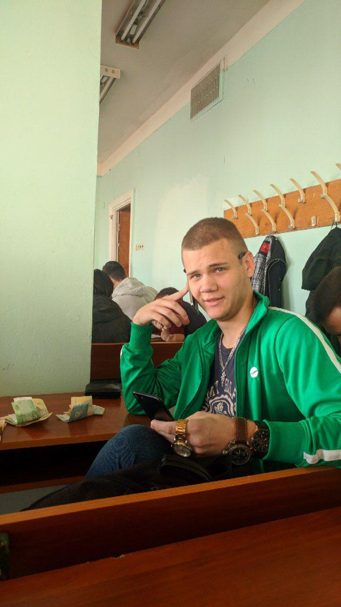

Misha Klimuk
Народився 20 листопада 1998 року в місті Кузнецовськ Рівненської області.
З 8 років почав займатись футболом, та грав у основному складі міської команди з футболу на позиції центрального нападника.
У 8-му класі пішов на сецію боксу. Через 1,5 року на обласних змаганнях зайняв 2-ге місце і 2-й дорослий розряд. Боксом займаюсь по цей час.
Закінчив школу в 2016 році з золотю медаллю. Після чого поступив на кафедру СПіСКС, ФПМ, де навчаюсь по цей час, і сподіваюсь продовжу навчатись після цих лаб.

Students personal page